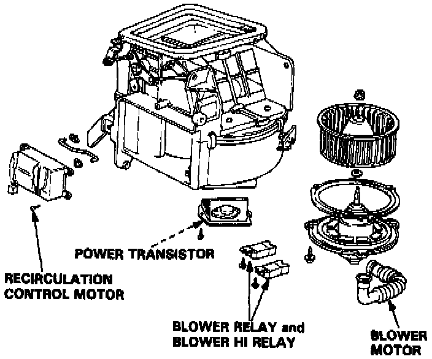

Operation CHARM
: Car repair manuals for everyone.
Home
>>
Acura
>>
1989
>>
Legend Sedan V6-2675cc 2.7L SOHC FI
>>
Repair and Diagnosis
>>
Heating and Air Conditioning
>>
Relays and Modules - HVAC
>>
Blower Motor Relay
>>
Locations
>>
Component View
Component View

The Blower Relay and Blower Hi Relay are located on the underside of the Blower Assembly, which is located under the dash on the passenger's side.